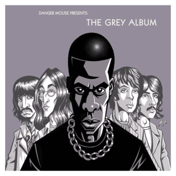

<!DOCTYPE html>
<html>
  <head>
    <meta charset="utf-8">
    <title>ERICATALYST</title>
    <link type="text/css" rel="stylesheet" href="style.css">
  </head>
  <body>
    <!-- <h1>under construction</h1> -->
    <!-- <h3>The evolution of existing music...</h3>
      <p id=intropar>
        <strong>What are Mashups?</strong> As a musical term, a mashup is a form of remixing
        that takes two or more songs and layers them together. Some mashups use the lyrics
        of one song over the beat from another. Some mashups take a large number of songs
        (such as the top 100 pop songs released within a year) and play them back to back.
      </p>
    <div class=example>
        
        <p id=greypiccaption>
          One well-known mashup album is by DJ Danger Mouse. It is called "The Grey Album"
          and it only uses music from The Beatles' "The White Album" and Jay-Z's "The Black
          Album."
        </p>
    </div>
    <div class=example>
      <p id=bananacaption> The example mashup below is of a remixed dialogue (<strong>Bacon Pancakes</strong>)
        from Advenutre Time and Alicia Keys' <strong>New York</strong>.
      </p>
      <iframe id=bananapancakes width="560" height="315" src="https://www.youtube.com/embed/cUYSGojUuAU" frameborder="0" allowfullscreen>
      </iframe>
    </div>
    <div id=discoveries>
      <h3>Places to Discover Mashups</h3>
          <ul>
            <li><a href= "https://www.youtube.com/results?search_query=mashups">YouTube</a></li>
            <li><a href= "https://soundcloud.com/search/sounds?q=mashups&filter.genre_or_tag=mashup">SoundCloud</a></li>
            <li>Many host music on their own personal <a href= "http://www.pomdeter.com/mashups/archive/best_of/pomDeter%20-%20Call%20Me%20A%20Hole%28really%20bad%20Friday%20night%29.mp3">websites</a></li>
    </ul></div>
    <div>
      <h3>Please take part in our survey!</h3>
    </div>
      <form id="survey" action="thanks.html" method="post">
    <div>
        <label>Pick the music genre you listen to most frequently</label> <br>
        <input type="radio" name="music" value="pop"> Pop<br>
        <input type="radio" name="music" value="rock"> Rock<br>
        <input type="radio" name="music" value="rap"> Rap<br>
        <input type="radio" name="music" value="country"> Country<br>
        <input type="radio" name="music" value="soul-blues"> Soul/Blues<br>
        <input type="radio" name="music" value="classical"> Classical
      </div> <br>
      <div>
        <label>Pick the musical era you enjoy the most</label>
        <select name="MusicEra">
          <option value="Current">Current</option>
          <option value="90s">90s</option>
          <option value="80s">80s</option>
          <option value="70s">70s</option>
          <option value="60s or Earlier">60s or Earlier</option>
        </select>
      </div> <br>
      <div>
      <label>Name a musical artist you would like to see in a mashup</label>
      <input type="text" name="artist">
    </div> <br>
      <button type="submit">Submit Survey</button>
      </form>
    </div> <br> <br>
    <footer> This page is part of an <a href="https://www.reddit.com/r/mashups"> online
      community</a> where people can discover mashups. The
      site is superior to mine because it allows users to log in to their own
      accounts, make individual posts, and rate one anothers posts. The posts that
    appear towards the top of the page are sorted there by an algorithm that takes
  into account the amount of time the post has been on the website and the amount
  of votes it has recieved."
  </footer>
  </body>
</html> -->
